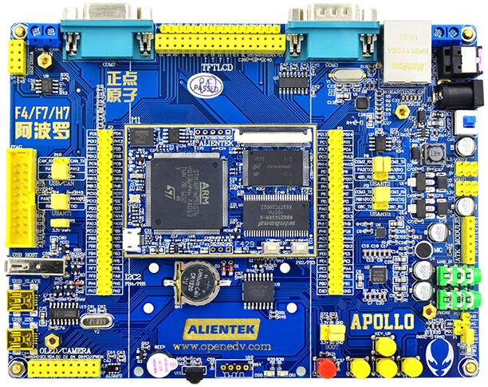
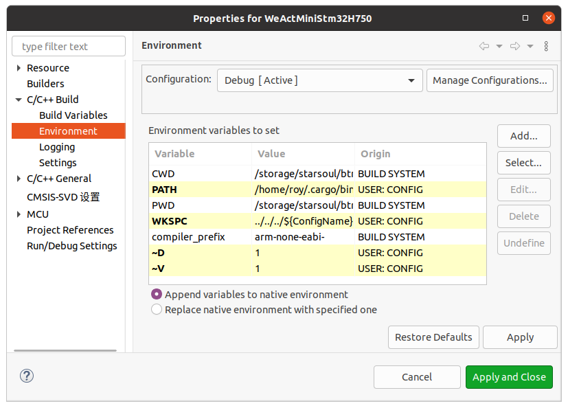
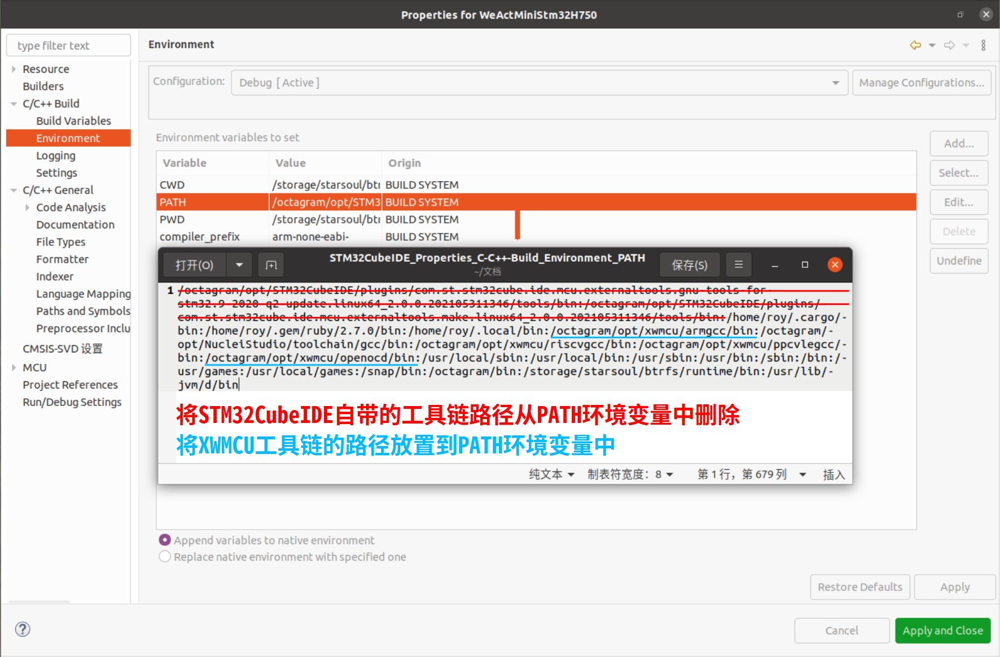
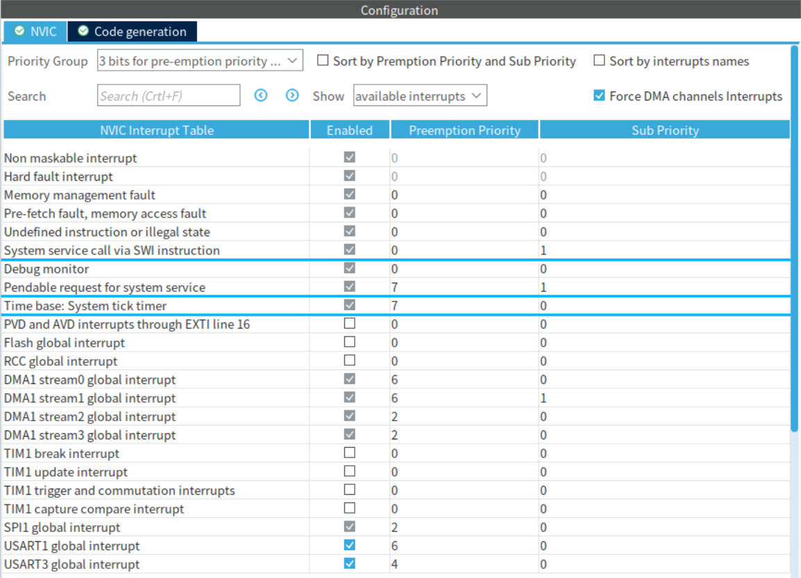
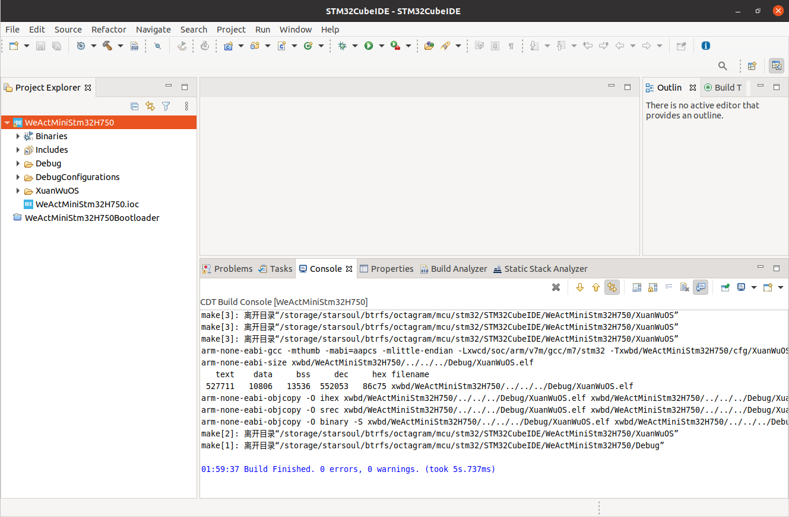
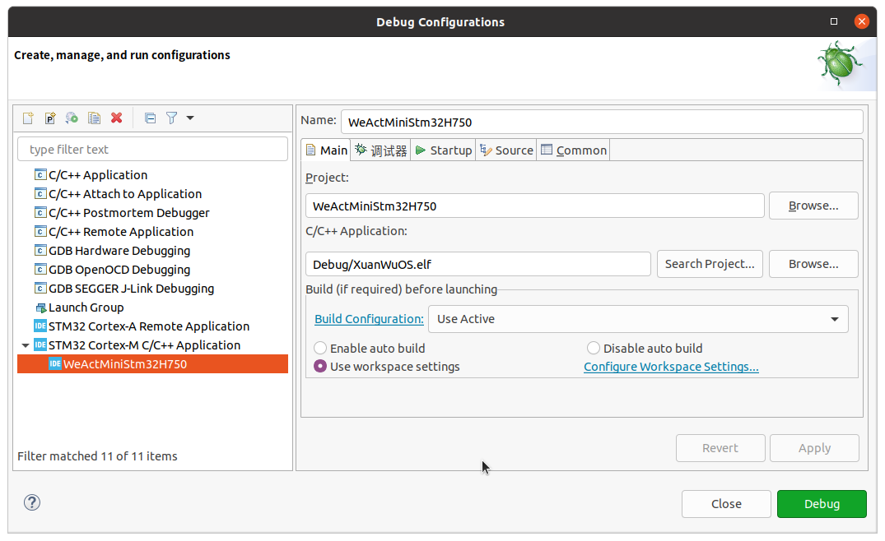
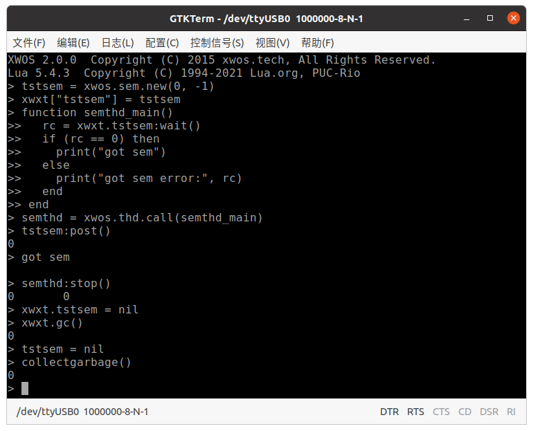
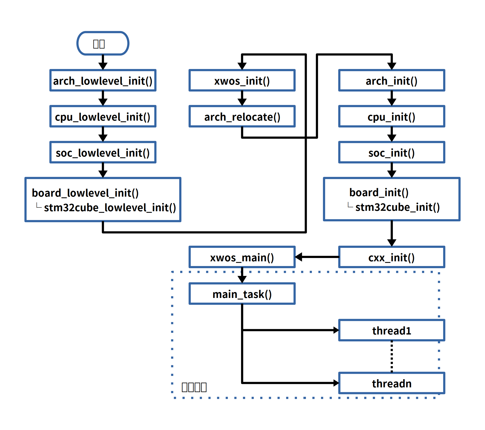

正点原子阿波罗Stm32H743开发板
介绍

- MCU: STM32H743IIT6
- SDRAM: 32MiB
- 更多介绍: 主页
- 电路板目录：
xwbd/ATKStm32H743
开发环境
- 编译集成环境可参考：开发环境搭建指南
源码
git clone --recursive https://gitee.com/xwos/ATKStm32H743.git
- 在已有的仓库中同步代码：
git pull
git submodule update
导入工程到STM32CubeIDE
工程需放在STM32CubeIDE的工作目录内（即STM32CubeIDE启动时指定的目录）。
- 菜单：File –> Import… –> General –> Projects from Folder or Archive
设置编译环境
- 打开菜单**“Project –> Properties –> C/C++ Build –> Environment”**；
- 点击**“Restore Defaults”**；
- 修改Debug配置的环境变量：
WKSPC:../../../${ConfigName}~D:1~V:1

- 修改Release配置的环境变量：
WKSPC:../../../${ConfigName}~D:0~V:1
环境变量PATH设置
- 修改Debug和Release两个配置的PATH环境变量
- 将STM32CubeIDE自带的工具链路径从PATH环境变量中删除；
- 将XWMCU工具链的路径放置到PATH环境变量中。

STM32CubeMX配置工程
- STM32CubeMX配置文件：
xwbd/ATKStm32H743/bm/stm32cube/cubemx/ATKStm32H743.ioc - XWOS对中断优先级的要求：
切换上下文的中断 <= 滴答定时器的中断 < 调度器服务中断
切换上下文的中断 < 其他中断 < 调度器服务中断
- NVIC设置
- 设置3个抢占优先级位和1个子优先级位
- SVC中断设置成最高优先级，即Preemption Priority为0；
- PendSV中断设置成最低优先级，即Preemption Priority为7；
- Systick中断设置成最低优先级，即Preemption Priority为7；
- 系统Fault的优先级设置为0；
- 其他中断的优先级只可在1~6之间。

编译

调试
打开菜单Run –> Debug Configurations…，根据仿真器类型，选择调试配置：
- ATKStm32H743-openocd-daplink：gdb + openocd + DAPLink调试器
- ATKStm32H743-openocd-jlink：gdb + openocd + JLink调试器
- ATKStm32H743-stlink：gdb + STLink GDB Server + JLink调试器

调试步骤
- 准备一张SD卡，格式化为FAT32文件系统；
- 将文件夹
xwam/example/lua内的lua脚本，拷贝到SD卡内； - 将SD卡插入开发板；
- 使用MiniUSB线连接电路板上的USB-232接口与PC；
- 打开终端工具（windows可选putty、SecretCRT，Linux可选gtkterm、picocom、minicom）, 但先不要在终端工具中打开串口，否则MCU会进入下载模式；
- 上电，并在STM32CubeIDE中启动调试，等待MCU运行到初始断点；
- 在终端工具中打开串口，参数：1M波特率/8位数据/1位停止位/无奇偶校验；
- 开始单步调试或连续运行调试。
调试技巧
关闭DCache
ARMv7-m7内核的MCU带有Cache，常常会对定位程序BUG带来困扰。 将下面的宏开关注释掉或定义改为0后可关闭Cache：
/* xwbd/ATKStm32H743/bm/stm32cube/cfg.h */
#define STM32CUBECFG_DCACHE 1
#define STM32CUBECFG_ICACHE 1
运行过程

- 程序入口：
xwbd/ATKStm32H743/bm/main/main.c - 启动流程：
xwos_main()创建一个主线程main_task()；main_task()依次调用各个玄武模块的xxx_start()函数完成对各个模块加载；- 开始并行执行各个模块中创建的线程；
示例
XWOS中有很多示例，可帮助用户快速了解API的用法：
- 线程
- 创建线程：
xwam/example/thread/create - 线程睡眠：
xwam/example/thread/sleep
- 创建线程：
- 定时器：
xwam/example/timer - 同步
- 信号量：
xwam/example/sync/semaphore - 条件量：
xwam/example/sync/condition - 事件标志：
xwam/example/sync/flg - 线程栅栏：
xwam/example/sync/br - 信号选择器：
xwam/example/sync/sel
- 信号量：
- 锁
- 中断管理：
xwam/example/lock/cpuirq - 自旋锁：
xwam/example/lock/spinlock - 顺序锁：
xwam/example/lock/seqlock - 互斥锁：
xwam/example/lock/mtx
- 中断管理：
- 内存管理
- 简单内存分配器：
xwam/example/mm/sma - 内存切片分配器：
xwam/example/mm/memslice - 伙伴算法分配器：
xwam/example/mm/bma - 内存池：只用于比较大的内存区域的管理，例如外接的SDRAM， ATKStm32H743工程已经为板载的SDRAM建立了内存池。
- 简单内存分配器：
- 玄武C库
- CRC：
xwam/example/xwlib/crc
- CRC：
每个示例中都有一个启动函数xxx_start()，可在xwbd/ATKStm32H743/bm/main/main.c文件中
的主线程main_task()启动示例，但最好一次只启动一个示例，避免日志冲突。
实验过程中最好将Lua虚拟机关闭，防止竞争串口导致输出混乱。方法是将
配置文件xwbd/ATKStm32H743/cfg/xwem.h中的配置XWEMCFG_vm_lua改为0。
系统集成的原理
- 所有移植的第三方组件、驱动包、示例代码等都是以玄武模块独立编译成静态库**.a**， 之后再将它们链接成**ELF**文件，再由**ELF**生成**bin**、**hex**和**smot**文件；
- 每个玄武模块都是一个独立的子工程并进行独立编译，设计上借鉴了安卓系统的Android.mk：
- 每个玄武模块中都有一个
xwmo.mk文件，其中定义的编译参数、头文件路径等 只对当前的玄武模块生效； - 每个玄武模块都是一个封闭的包，外部一般不能直接引用内部头文件，需要封装对外可见的 类型以及接口函数，并统一放在专门的API头文件内
- API头文件通常以mif.h作为文件名，含义是模块接口(Module InterFace)；
- 每个玄武模块中都有一个
- XWOS内已经包含了大量玄武模块：
xwcd：外设芯片的驱动；xwam：示例与应用；xwmd：中间件；xwem：第三方开源软件；
- 玄武模块的具体信息可以参考用户手册-构建系统-玄武模块。
代码启动流程

stm32cube_lowlevel_init()：初始化时钟stm32cube_init()：初始化内存管理、cache、GPIO、DMA等基础设备main_task()：初始化其他设备、启动其他子线程
功能
BSP
- STM32Cube模块：
xwbd/ATKStm32H743/bm/stm32cube - STM32CubeMX配置文件：
xwbd/ATKStm32H743/bm/stm32cube/cubemx/ATKStm32H743.ioc - STM32CubeMX生成源码目录：
xwbd/ATKStm32H743/bm/stm32cube/cubemx - 适配XWOS的源码：
xwbd/ATKStm32H743/bm/stm32cube/xwac - 中断向量表：
xwbd/ATKStm32H743/bm/stm32cube/cubemx/IVT- 中断向量表是使用命令自动生成的；
- 命令：
xwbs/util/el/stm32ivt/stm32ivt.el xwbd/ATKStm32H743/bm/stm32cube
- 终端UART
- 设备：USART1
- 参数：1M波特率/8位数据/1位停止位/无奇偶校验
- 驱动
- 驱动框架 —— 设备栈：
xwmd/ds/uart/dma.c - 设备栈驱动：
xwbd/ATKStm32H743/bm/stm32cube/xwac/xwds/uart.c - HAL库驱动：
xwbd/ATKStm32H743/bm/stm32cube/cubemx/Core/Src/usart.c - 注意：HAL库中的驱动存在BUG，XWOS中所提供的代码已修复
- 驱动框架 —— 设备栈：
- QSPI Flash
- 映射地址：0x90000000
- 大小：32MiB
- 驱动：
xwbd/ATKStm32H743/bm/stm32cube/cubemx/Core/Src/quadspi.c
- SDRAM
- 映射地址：0xC0000000
- 大小：32MiB
- 驱动：
xwbd/ATKStm32H743/bm/stm32cube/cubemx/Core/Src/fmc.c - 内存池
- 头文件
xwbd/ATKStm32H743/bm/stm32cube/mif.hxwos/mm/mempool/allocator.h
- 内存池对象：
sdram_mempool
- 头文件
- SPI
- 驱动
- 设备栈驱动框架：
xwmd/ds/spi/master.c - 设备栈驱动：
xwbd/ATKStm32H743/bm/stm32cube/xwac/xwds/spim.c - HAL库驱动：
xwbd/ATKStm32H743/bm/stm32cube/cubemx/Core/Src/spi.c
- 设备栈驱动框架：
- 驱动
- I2C
- 驱动
- 设备栈驱动框架：
xwmd/ds/i2c/master.c - 设备栈驱动：
xwbd/ATKStm32H743/bm/stm32cube/xwac/xwds/i2cm.c - HAL库驱动：
xwbd/ATKStm32H743/bm/stm32cube/cubemx/Core/Src/i2c.c
- 设备栈驱动框架：
- 驱动
- I2C EEPROM
- 大小：256B
- 驱动
- 设备栈驱动框架：
xwcd/perpheral/i2c/eeprom - 设备栈驱动：
xwbd/ATKStm32H743/bm/stm32cube/xwac/xwds/at24c02.c
- 设备栈驱动框架：
Lua
- 版本：5.4
- 源码：
xwem/vm/lua - 适配代码：
xwbd/ATKStm32H743/bm/stm32cube/xwac/lua - 已注册的驱动库：
xwbd/ATKStm32H743/bm/luamod/ds.c- SOC:
stm32 - UART:
uart1,uart2 - I2C:
i2c2m - SPI:
spi1m,spi2m
- SOC:
- REPL
- 运行sd卡中的脚本
FATFS
- 版本：0.14
- 源码：
xwem/filesystem/fatfs - 适配代码：
xwbd/ATKStm32H743/bm/stm32cube/xwac/fatfs - 文件系统：路径以
"sd:/"开始 - SD卡
- 驱动：
xwbd/ATKStm32H743/bm/stm32cube/cubemx/Core/Src/sdmmc.c
- 驱动：
libc
- 适配代码：
xwbd/ATKStm32H743/bm/stm32cube/xwac/newlib - 标准输入、输出/错误：重定向至USART1
- 文件系统：位于SD卡内，从路径
sd:/开始 - 动态内存管理：由SDRAM的内存池提供
电源管理
- 适配代码：
xwbd/ATKStm32H743/bm/stm32cube/xwac/xwds/pm.c
Feedback
Was this page helpful?
Glad to hear it! Please tell us how we can make it even better.
Sorry to hear that. Please tell us how we can improve.